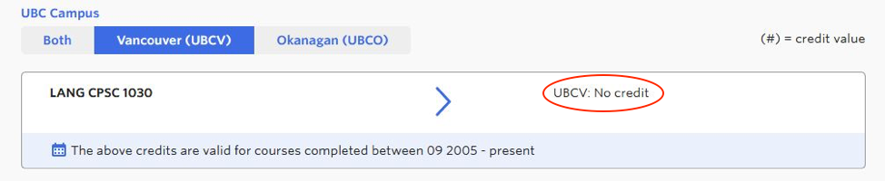

UX Lab @ UBC

PROJECT DETAILS
Methods: Moderated usability tests, Questionnaires, Scenario tasks, User interviews
Output: Presentation of findings, Slide deck, Written Report
Team: Jessica del Rosario, Tiffany Wu, Carley Low, Wynonna Moo
Responsibilities: Usability testing, Data collection, Data analysis, Report writing
The newly launched Transfer Credit Search Tool and 'What can I do with my Science degree?’ page on UBC’s website were created to assist advisors, incoming transfer students, and UBC Science students with course and career planning.
The Transfer Credit Search Tool was launched on May 2, 2019, on the Student Services site. Prior to the launch, there were three phases of usability testing performed on the prototypes and wireframes, allowing for reiteration in its development.
More information about the UX Lab projects our team worked on over Summer 2019:
Transfer Credit Tool Presentation
Transfer Credit Tool Full Case Study
PROJECT GOAL
The purpose of the study is to understand how students and stakeholders are navigating the Transfer Credit Search Tool.
TEST FLOW
To evaluate the performance of the newly launched search tool, the UBC UX Lab ran usability testing with incoming UBC transfer students and both UBC and non-UBC academic other stakeholders such as advisors.

The main usability study consisted of:
- Pre-screen Questionnaire
- Scenario Task
- Follow-up Questions
PARTICIPANT DEMOGRAPHICS
As multiple reiterated pre-launch testings have been conducted previously, we tested a smaller sample of 7 participants (4 advisors, 3 students).
KEY FINDINGS
Search Field:
- Course code: 2 of 4 advisors and 1 of 3 students input course code without space and receive error message. Students and advisors also mentioned it would be useful to have autocomplete or drop-down menu listing potential course codes.
Search Results:
- Error message: students and advisors found ‘No Results Found’ error message to be quite confusing - they were not sure whether this meant that the course will not transfer at all or if it still had to be evaluated in the future.
- Data inconsistency: 2 of 3 students and 2 of 4 advisors found that the course codes were not consistent between the UBC database and their school database, or that the tool showed their course would not transfer when they knew that it was supposed to. This caused trust issues among users of the tool. 
- 'Change Search' button: this button is meant to be an easy way for students and advisors to return to the search page from the results page without having to re-input general information such as their institution name. 1 of 3 students and 1 of 4 advisors mentioned they found it difficult to find this button or expected it to be somewhere else on the page, such as the top left where one might expect to see a ‘back’ button.
- Critical error: 1 of 3 students received the search result ‘UBCV CPSC 1st’ rather than a specific course code (this result just means that the course they searched can replace any first-year CPSC course at UBCV). Even when prompted to look for the ‘How to read results’ section on the page, the student had trouble finding this and used Google search instead, which showed no helpful results. Once told where to find instructions on how to interpret the result, the student still found it to be confusing.

LIMITATIONS
- Limited to 7 participants
- Tool had already undergone pre-launch usability testing.
- According to Jakob Nielsen from the Nielsen Norman group, running many small tests with five users is more efficient and potentially more effective than running many elaborate usability tests with several users (the more users you add, the more you’re likely to encounter the same results).
- Limited to Science students
- All 3 student participants were transferring into the Faculty of Science.
- May be helpful to run usability test with students from other faculties to have more representative data.
FUTURE DIRECTION
- Make ‘Change Search’ button more obvious or in more identifiable location.
- Specify error message to the error being made.
- Improve reliability - check for data accuracy.
- Increase exposure - improve SEO.